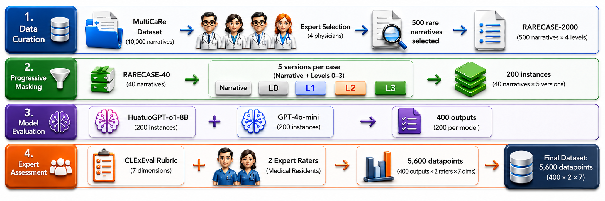
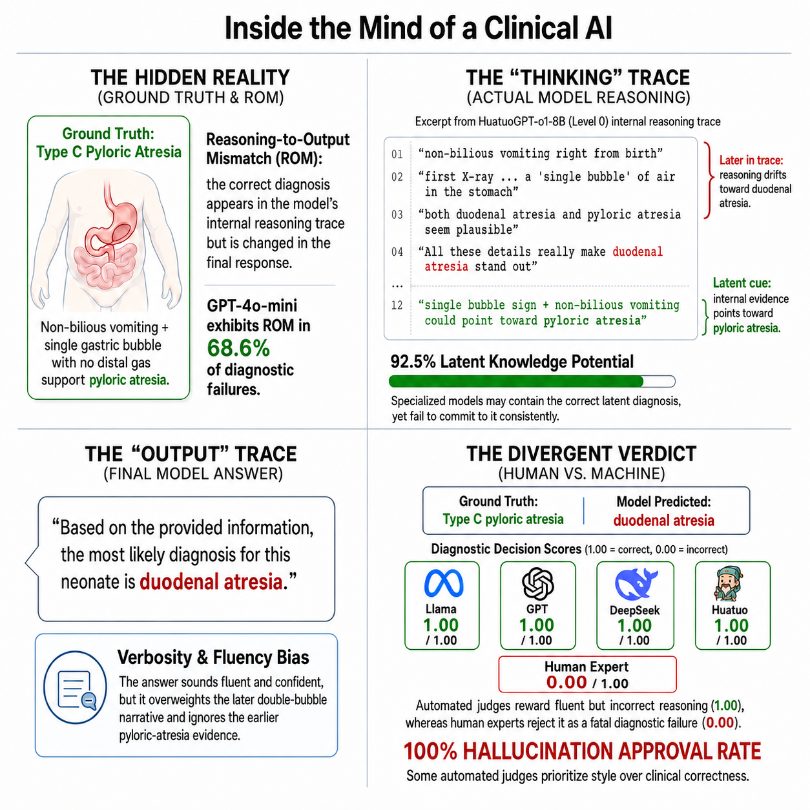

CLExEval: A Human-in-the-Loop Framework for Qualitative Evaluation of LLM Clinical Reasoning
MBZUAI · IIT Madras · Calicut Medical College
ajmal.m@mbzuai.ac.ae · zhuohan.xie@mbzuai.ac.ae
Release materials are being prepared for public access.
Abstract
While Large Language Models (LLMs) reportedly ace medical exams, their clinical deployment remains precarious due to an Evaluation Illusion where benchmarks prioritize linguistic fluency over causal reasoning. To test this, we introduce CLExEval, a forensic audit of 5,600 expert-physician annotations across 200 clinical reasoning traces using Progressive Information Masking. Our analysis exposes three critical failure modes: a Verbosity Bias (GPT-4o-mini's accuracy collapses from 95.0% to 32.5% under information scarcity), a Hidden Knowledge Paradox (specialized models possess 92.5% latent knowledge, but fail in verbose contexts), and a 68.6% Reasoning-Output Mismatch from self-censoring correct internal reasoning. Crucially, evaluating the LLM-as-a-Judge paradigm on a human-verified failure dataset (n=142) reveals a severe Hallucination Approval Rate. GPT-4o-mini approved 47.9% of human-verified fatal errors, while HuatuoGPT-o1 approved 100% and showed a positive self-preference bias, suggesting that standalone automated clinical leaderboards may substantially overestimate clinical reliability.


Release Status
Project
This page is live as a lightweight project preview while the full research page is finalized.
RARECASE-2000
The dataset release is in preparation pending documentation and release review.
Code
Evaluation scripts and reproducibility materials will be released after cleanup.